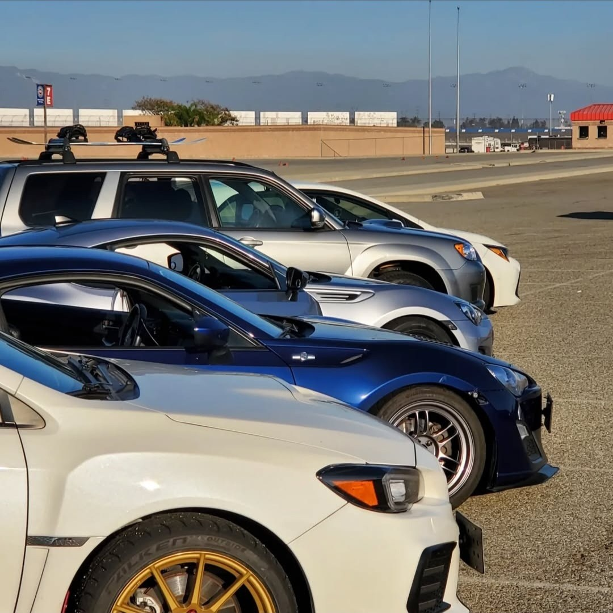
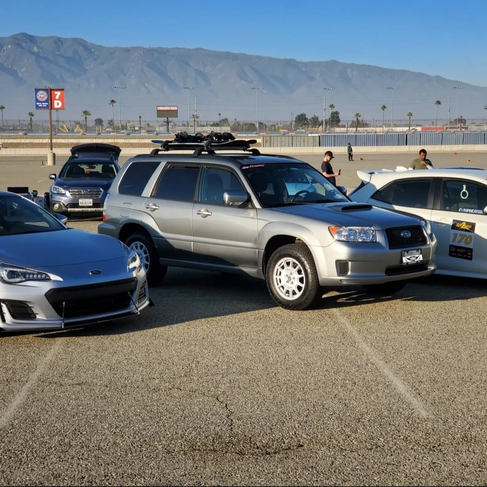

Autocross Adventures and Rallycross Aspirations
Taking my Forester XT to the track—autocross thrills, three-wheel turns, and a possible move to rallycross for the next challenge.
Introduction to Autocross:
Autocross has been an exhilarating part of my journey with the Forester. This competitive format, where drivers navigate a course marked by cones on a flat, typically paved surface, tests precision driving skills with tight turns and quick maneuvers. Each driver takes on the course one at a time, aiming for the fastest possible lap.
Experiences and Challenges:
Participating in autocross events, my Forester often stood out as the sole SUV amidst a sea of lower, nimbler sedans and coupes. Despite its unconventional appearance for the sport, the Forester's performance was consistently impressive, thanks to its low center of gravity afforded by the horizontally opposed engine. However, its 1-inch lift introduced unique challenges. The added height, while beneficial for daily driving and off-roading, led to moments where the vehicle would lift onto three wheels during sharp turns. This phenomenon raised safety concerns among race organizers, who suggested I either slow down or modify the vehicle’s stance to lower its center of gravity.
Transition to Rallycross:
Given the limitations encountered in autocross due to the Forester's height, I am considering transitioning to rallycross. This form of motorsport is more forgiving of the vehicle's raised profile as it involves racing on mixed-surface tracks, which could better accommodate my Forester's setup. Rallycross tracks typically feature gravel and dirt sections, demanding a different set of driving skills and vehicle setup, which might suit the Forester's capabilities and my driving style more closely.
Future Modifications and Goals:
My plan is to explore ways to adjust the vehicle's stance by widening its track while maintaining as much of the lift as possible, to strike a balance between stability and clearance. These modifications would aim to enhance the Forester's racing prowess without sacrificing its utility and performance in everyday driving and off-road scenarios.
Conclusion:
Autocross has proven to be a thrilling showcase of what the Forester can do in a competitive setting, but the adventure doesn't stop there. As I prepare for the next phase—potentially entering the world of rallycross—I'm excited about the possibilities. Racing will always be a key part of my journey with this vehicle, driven by its unexpected capabilities and my passion for pushing both my limits and those of the Forester. Stay tuned as I navigate through these exciting transitions, ready to tackle new challenges and continue surprising onlookers with what an SUV can achieve on the racetrack.
Video Showcase:
Check out this video showing a lap during an autocross event in Big Bear, California, highlighting not just the Forester's agility but also my driving prowess. The video will offer a firsthand look at how an SUV can dance around an autocross course, challenging the conventional expectations of racing enthusiasts and participants alike. All wheel drifting baby!
Watch the autocross lap on YouTube


